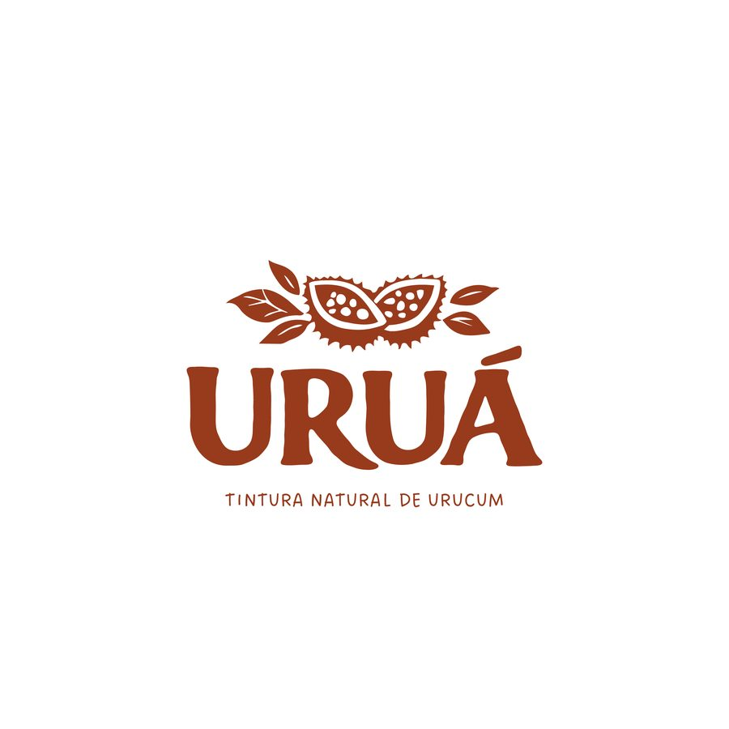
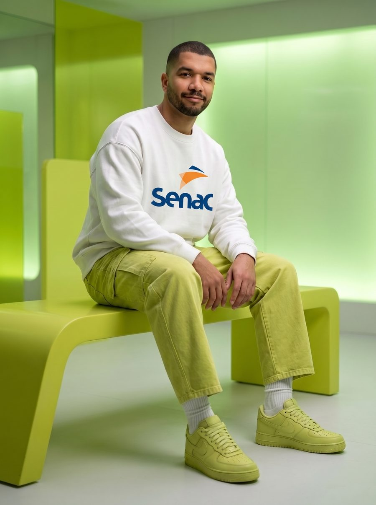
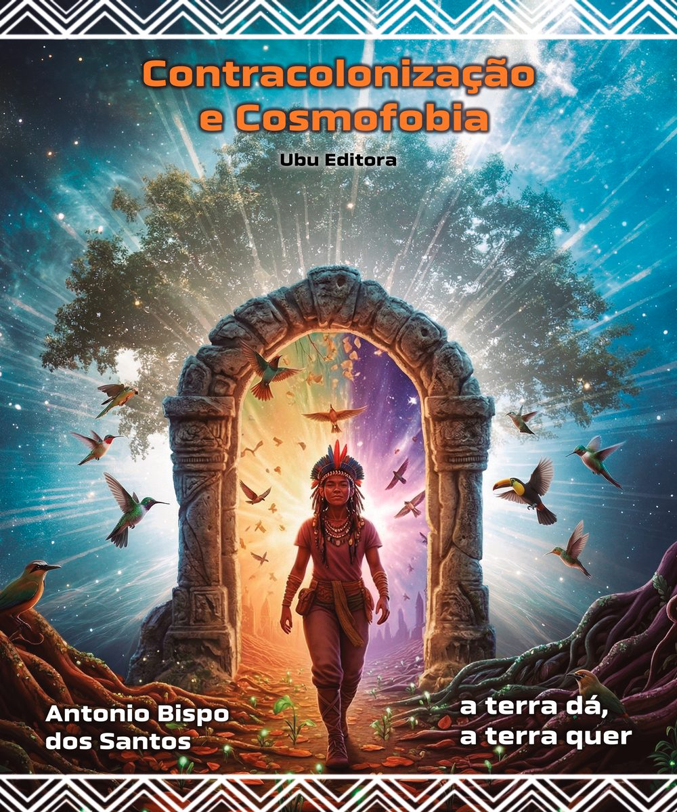

Uruá Titura Natural – Produtos de Maquiagem
Embalagem - Identidade visual
Desenvolvimento de identidade e embalagem com foco em estética natural e comunicação sensorial.
Estudos SENAC Salto - Front-end & Design
Sou Wesley Oliveira, designer gráfico e desenvolvedor front-end. Nesta landing concentro meus projetos de estudo, focados em UI, animações e experiência do usuário.
Demo interativo
Mova o mouse sobre o card. Ele reage em tempo real.

Sobre mim
Designer gráfico e desenvolvedor front-end, com foco em interfaces animadas, UI moderna e experiência do usuário.
Esta landing faz parte do meu portfólio de estudo como aluno do SENAC Salto, integrando projetos gráficos, protótipos de interface e demos interativos usando HTML, CSS e JavaScript.
Projetos reais publicados no Behance, parte do meu portfólio de estudo como aluno do SENAC Salto.

Embalagem - Identidade visual
Desenvolvimento de identidade e embalagem com foco em estética natural e comunicação sensorial.

Editorial - Projeto gráfico
Releitura visual de obra com foco em composição, tipografia e ritmo de leitura.
Demos e experimentos de interfaces animadas, inspirados em bibliotecas como React Bits, Animata e KokonutUI, aplicados em projetos próprios.
Componente React com animação de mola para títulos, focado em microinterações suaves e feedback visual.
Cards com efeito de vidro, gradientes sutis e animações on-hover, pensados para destacar projetos de forma elegante.
Tecnologias, bibliotecas e templates que uso como base para criar interfaces modernas e animadas.
Componentes animados, heros e grids profissionais para interfaces memoráveis.
Visitar React Bits ProColeção open-source de animações e interações em React + Tailwind.
Visitar AnimataComponentes e templates para criar sites elegantes de forma rápida.
Ver templates KokonutUISe quiser conversar sobre projetos, estudos ou colaborações, pode me chamar pelos canais abaixo.
+55 (11) 9 9858-6090
link será adicionado assim que o site estiver publicado.